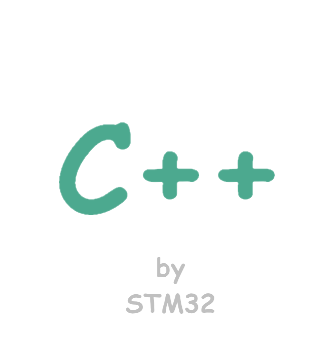
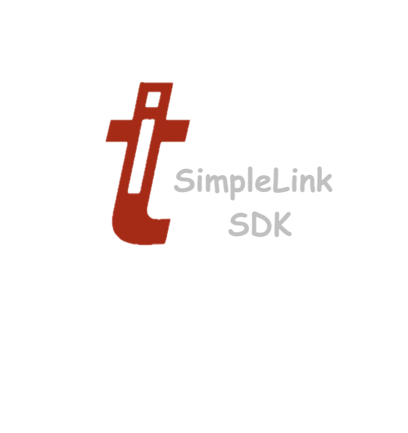
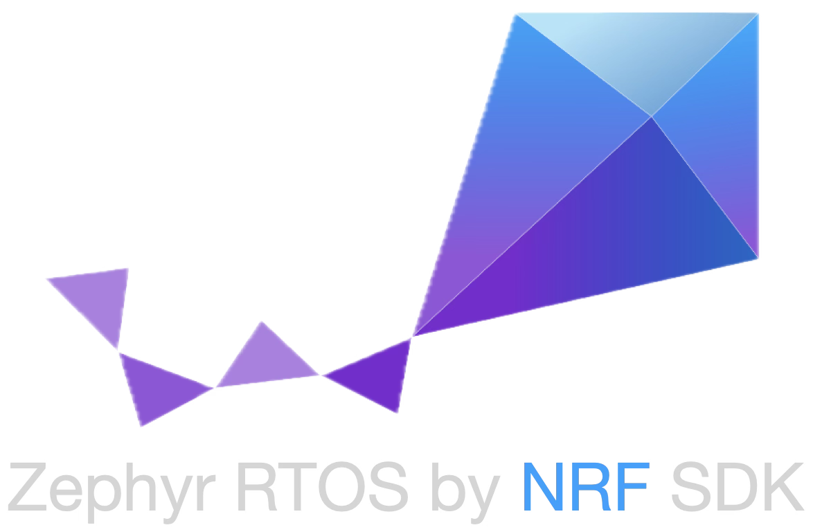

If we take a few step above the machine instructions, we enter the amazing land of a programing language called C. I have created this repository to show off my skills and knowledge about this simple yet exteremly powerful programing language. This repository would contain basic illustrative examples, subsystems and modules. I have extensive background in firmware development and embedded engineering where the C language is a power house.
It is undenyable that Python is an incredibly powerful and handy interpreting langauage that can be used in so many different contexts from pure academic research to test automation and to industry-level sofware solutions. This is especially true in the field of embedded engineering where Python is widely used for automation, variety of different automted testing, and debugging and instrumentation interfacing. I have created this repository to demonstrate my working knowledge of this enabling tool.

We should accept that c++ rules! Although it does not receive much love, which is understandable, this programing language has been the corner stone of much of software and digitial commerce in the past decades of human civilization. This language also plays a key role in firmware developments and embedded engineering. It's widely used to create portable and scalable applications that run on embedded devices where its unique and advanced features is very handy. In this repository, I plan to add c++ developments in a bare metal fashion for an embedded platform called stm32.

The Texas Instrument simplelink sdk is a development environment that enables building production-level firmware for the CC13xx and CC26xx wireless MCUs. This SDK also includes TI-RTOS facilitating application development for the real time scenarios. To build and flash a firmware image, you would need TI's dedicated IDE Code Composer Studio. I plan to add few projects to illustrate how this mighty sdk can be used!

The Zephyr real time operating system (RTOS) is a powerful and comperehensive open source RTOS that supports many embedded and microcontroller platforms. The nordic semiconductors has its own dedicatd fork of Zerphyr RTOS for their software development kit (SDK) called NRF SDK. In this repository, I add and document a project to demonstrate how the Zephyr features can be used to implement a BLE service that would be accessible by the phones.